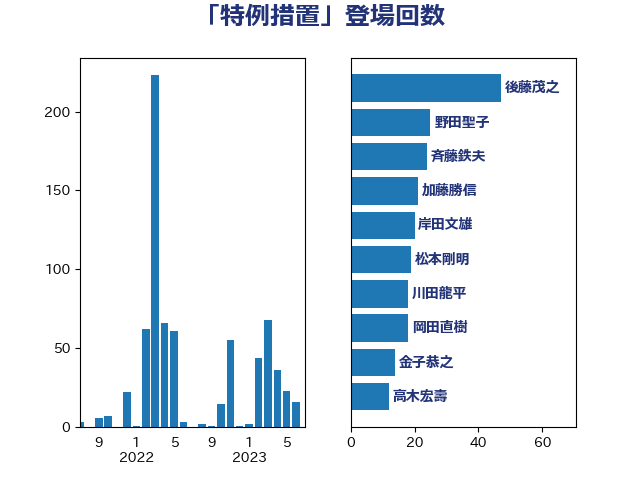

単語「特例措置」

| 後藤茂之 | 自由民主党 | 47 回 |
| 野田聖子 | 自由民主党 | 25 回 |
| 斉藤鉄夫 | 公明党 | 24 回 |
| 加藤勝信 | 自由民主党 | 21 回 |
| 岸田文雄 | 自由民主党 | 20 回 |
| 松本剛明 | 自由民主党 | 19 回 |
| 川田龍平 | 立憲民主党 | 18 回 |
| 岡田直樹 | 自由民主党 | 18 回 |
| 金子恭之 | 自由民主党 | 14 回 |
| 高木宏壽 | 自由民主党 | 12 回 |
| 森屋隆 | 立憲民主党 | 8 回 |
| 鈴木俊一 | 自由民主党 | 7 回 |
| 西村康稔 | 自由民主党 | 7 回 |
| 小里泰弘 | 自由民主党 | 7 回 |
| 中川康洋 | 公明党 | 7 回 |
| 高橋千鶴子 | 日本共産党 | 6 回 |
| 石井苗子 | 日本維新の会 | 6 回 |
| 河野太郎 | 自由民主党 | 6 回 |
| 岡本あき子 | 立憲民主党 | 6 回 |
| 西銘恒三郎 | 自由民主党 | 5 回 |
| 田中健 | 国民民主党 | 5 回 |
| 東徹 | 日本維新の会 | 5 回 |
| 山口那津男 | 公明党 | 5 回 |
| 宮路拓馬 | 自由民主党 | 5 回 |
| 原口一博 | 立憲民主党 | 5 回 |
| たがや亮 | れいわ新選組 | 5 回 |
| 近藤和也 | 立憲民主党 | 4 回 |
| 谷川とむ | 自由民主党 | 4 回 |
| 福岡資麿 | 自由民主党 | 4 回 |
| 石田昌宏 | 自由民主党 | 4 回 |
| 石井啓一 | 公明党 | 4 回 |
| 浜田聡 | NHK党 | 4 回 |
| 山本博司 | 公明党 | 4 回 |
| 城井崇 | 立憲民主党 | 4 回 |
| 倉林明子 | 日本共産党 | 4 回 |
| 住吉寛紀 | 日本維新の会 | 4 回 |
| 伊佐進一 | 公明党 | 4 回 |
| 今枝宗一郎 | 自由民主党 | 4 回 |
| 中川正春 | 立憲民主党 | 4 回 |
| 道下大樹 | 立憲民主党 | 3 回 |
| 進藤金日子 | 自由民主党 | 3 回 |
| 越智俊之 | 自由民主党 | 3 回 |
| 西岡秀子 | 国民民主党 | 3 回 |
| 萩生田光一 | 自由民主党 | 3 回 |
| 菊田真紀子 | 立憲民主党 | 3 回 |
| 若松謙維 | 公明党 | 3 回 |
| 田村貴昭 | 日本共産党 | 3 回 |
| 深澤陽一 | 自由民主党 | 3 回 |
| 浮島智子 | 公明党 | 3 回 |
| 河野義博 | 公明党 | 3 回 |
| 沢田良 | 日本維新の会 | 3 回 |
| 小沢雅仁 | 立憲民主党 | 3 回 |
| 大塚耕平 | 国民民主党 | 3 回 |
| 伊藤孝江 | 公明党 | 3 回 |
| 中野洋昌 | 公明党 | 3 回 |
| おおつき紅葉 | 立憲民主党 | 3 回 |
| 須藤元気 | 無所属 | 2 回 |
| 野田国義 | 立憲民主党 | 2 回 |
| 赤羽一嘉 | 公明党 | 2 回 |
| 角田秀穂 | 公明党 | 2 回 |
| 藤木眞也 | 自由民主党 | 2 回 |
| 芳賀道也 | 国民民主党 | 2 回 |
| 船橋利実 | 自由民主党 | 2 回 |
| 竹詰仁 | 国民民主党 | 2 回 |
| 渡辺猛之 | 自由民主党 | 2 回 |
| 河西宏一 | 公明党 | 2 回 |
| 横沢高徳 | 立憲民主党 | 2 回 |
| 杉久武 | 公明党 | 2 回 |
| 平木大作 | 公明党 | 2 回 |
| 岸真紀子 | 立憲民主党 | 2 回 |
| 山口俊一 | 自由民主党 | 2 回 |
| 小沼巧 | 立憲民主党 | 2 回 |
| 小寺裕雄 | 自由民主党 | 2 回 |
| 宮崎勝 | 公明党 | 2 回 |
| 宗清皇一 | 自由民主党 | 2 回 |
| 坂井学 | 自由民主党 | 2 回 |
| 古賀篤 | 自由民主党 | 2 回 |
| 古川禎久 | 自由民主党 | 2 回 |
| 佐藤英道 | 公明党 | 2 回 |
| 伊藤岳 | 日本共産党 | 2 回 |
| 中司宏 | 日本維新の会 | 2 回 |
| 高木かおり | 日本維新の会 | 1 回 |
| 馬場雄基 | 立憲民主党 | 1 回 |
| 馬場伸幸 | 日本維新の会 | 1 回 |
| 青柳仁士 | 日本維新の会 | 1 回 |
| 青山周平 | 自由民主党 | 1 回 |
| 階猛 | 立憲民主党 | 1 回 |
| 長谷川淳二 | 自由民主党 | 1 回 |
| 鈴木庸介 | 立憲民主党 | 1 回 |
| 金村龍那 | 日本維新の会 | 1 回 |
| 金城泰邦 | 公明党 | 1 回 |
| 野間健 | 立憲民主党 | 1 回 |
| 野村哲郎 | 自由民主党 | 1 回 |
| 遠藤良太 | 日本維新の会 | 1 回 |
| 赤池誠章 | 自由民主党 | 1 回 |
| 藤川政人 | 自由民主党 | 1 回 |
| 舟山康江 | 国民民主党 | 1 回 |
| 舞立昇治 | 自由民主党 | 1 回 |
| 羽田次郎 | 立憲民主党 | 1 回 |
| 竹内真二 | 公明党 | 1 回 |
| 空本誠喜 | 日本維新の会 | 1 回 |
| 秋野公造 | 公明党 | 1 回 |
| 福島伸享 | 無所属 | 1 回 |
| 神谷宗幣 | 参政党 | 1 回 |
| 石垣のりこ | 立憲民主党 | 1 回 |
| 石井拓 | 自由民主党 | 1 回 |
| 田村智子 | 日本共産党 | 1 回 |
| 牧島かれん | 自由民主党 | 1 回 |
| 片山大介 | 日本維新の会 | 1 回 |
| 滝波宏文 | 自由民主党 | 1 回 |
| 源馬謙太郎 | 立憲民主党 | 1 回 |
| 湯原俊二 | 立憲民主党 | 1 回 |
| 渡辺博道 | 自由民主党 | 1 回 |
| 浜口誠 | 国民民主党 | 1 回 |
| 泉田裕彦 | 自由民主党 | 1 回 |
| 横山信一 | 公明党 | 1 回 |
| 梅村みずほ | 日本維新の会 | 1 回 |
| 柳本顕 | 自由民主党 | 1 回 |
| 柳ヶ瀬裕文 | 日本維新の会 | 1 回 |
| 杉尾秀哉 | 立憲民主党 | 1 回 |
| 本田顕子 | 自由民主党 | 1 回 |
| 末次精一 | 立憲民主党 | 1 回 |
| 末松義規 | 立憲民主党 | 1 回 |
| 斎藤アレックス | 国民民主党 | 1 回 |
| 徳永久志 | 無所属 | 1 回 |
| 岩本剛人 | 自由民主党 | 1 回 |
| 山際大志郎 | 自由民主党 | 1 回 |
| 山田勝彦 | 立憲民主党 | 1 回 |
| 山本香苗 | 公明党 | 1 回 |
| 山本剛正 | 日本維新の会 | 1 回 |
| 尾身朝子 | 自由民主党 | 1 回 |
| 宮本徹 | 日本共産党 | 1 回 |
| 宮本岳志 | 日本共産党 | 1 回 |
| 宮崎雅夫 | 自由民主党 | 1 回 |
| 守島正 | 日本維新の会 | 1 回 |
| 大家敏志 | 自由民主党 | 1 回 |
| 塩田博昭 | 公明党 | 1 回 |
| 堀場幸子 | 日本維新の会 | 1 回 |
| 堀井巌 | 自由民主党 | 1 回 |
| 吉田統彦 | 立憲民主党 | 1 回 |
| 吉田久美子 | 公明党 | 1 回 |
| 吉田とも代 | 日本維新の会 | 1 回 |
| 吉井章 | 自由民主党 | 1 回 |
| 古川元久 | 国民民主党 | 1 回 |
| 勝目康 | 自由民主党 | 1 回 |
| 前原誠司 | 国民民主党 | 1 回 |
| 佐藤公治 | 立憲民主党 | 1 回 |
| 佐々木さやか | 公明党 | 1 回 |
| 伊藤渉 | 公明党 | 1 回 |
| 井坂信彦 | 立憲民主党 | 1 回 |
| 中根一幸 | 自由民主党 | 1 回 |
| 中山展宏 | 自由民主党 | 1 回 |
| 下野六太 | 公明党 | 1 回 |
| こやり隆史 | 自由民主党 | 1 回 |